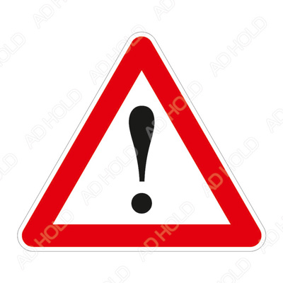

Инструкции за употреба
Инструкции за безопасност и опазване на околната среда
Този раздел съдържа инструкции
за безопасност, необходими за
избягване на риска от нараняване и
материални щети. Неспазването на
тези инструкции ще обезсили всички
видове продуктова гаранция.
Употреба на уреда
|  |
ВНИМАНИЕ:
Уверете се решетките
на вентилационните
отвори да са отворени
при положение
на устройството в
амбалажния пакет или
след поставяне на
работното му място.
|
|
ВНИМАНИЕ:
С изключение
на препоръките,
допустими от
производителя, не
използвайте механични
или всякакви други
устройства с цел
ускоряване процеса
на размразяване на
устройството.
|
|
ВНИМАНИЕ:
Не повреждайте
действието на
охладителната
система на фреона.
|
|
ВНИМАНИЕ:
Не използвайте
електрическо
оборудване в
отделението за
съхранение на
хранителни продукти
, недопустимо от
производителя на
устройството.
|
|
ВНИМАНИЕ:
Не съхранявайте
експлозивни вещества
като например
аерозолни спрейове в
уреда.
|
Общи правила за безопасност
-
Този продукт не трябва да се използва от
лица с физически, сензорни и ментални
увреждания, без достатъчно знания и опит
или от деца. Уредът може да се използва
от тези лица само под надзора и спазвайки
инструкциите на лицата, отговорни за
тяхната безопасност. Децата не трябва да
си играят с този уред.
-
В случай на неизправност, изключете
уреда от контакта.
-
След изваждане на щепсела от контакта,
изчакайте 5 минути, преди отново
да включите щепсела от контакта.
Изключвайте уреда от контакта, ако няма
да го използвате. Не пипайте щепсела с
мокри ръце! Не дърпайте кабела, а винаги
дръжте щепсела.
-
Избършете щепсела със суха кърпа, преди
да го включите в контакта.
-
Не включвайте хладилника, ако контактът
е разхлабен.
-
Изключвайте уреда по време на монтаж,
поддръжка, почистване и ремонт.
-
Ако известно време няма да използвате
уреда, изключете го от контакта и извадете
-
Не използвайте пара или втечнени
почистващи препарати за почистване на
хладилника и стопяване на леда вътре
в него. Парата може да се свърже с
електрифицираните зони и да предизвика
късо съединение или токов удар!
-
Не мийте уреда чрез пръскане или
обливане с вода върху него! Опасност от
токов удар!
-
В случай на неизправност, не използвайте
продукта, тъй като може да предизвика
токов удар. Свържете се с оторизиран
сервиз, преди да предприемете каквито и
да е дейности.
-
Вашият хладилник „Side by Side“ се
нуждае от свързване с водоизточник.
Ако все още няма кран за вода и трябва
да се обадите на водопроводчик, моля,
обърнете внимание: В случай че домът
Ви е оборудван със система за подово
отопление, моля, имайте предвид, че
пробиването на дупки в бетонния таван
може да повреди тази отоплителна
система.
HC предупреждение
Ако продуктът има система за охлаждане с
R600a газ, погрижете се да избягвате повреда
на системата за охлаждане и тръбата, докато
използвате и преместване на продукта. Този
газ е запалим. Ако охлаждащата система
е повредена, дръжте продукта далече от
източници на пожар и незабавно проветрете
помещението.
За модели с
воден фонтан
-
Налягането на входа за студена вода
трябва да е максимум 90 psi (620 kPa). Ако
налягането на водата надвиши 80 psi (550
kPa), използвайте клапана за ограничаване
на налягането в мрежовата система. Ако
не знаете как да проверите налягането на
водата, потърсете помощ от професионален
водопроводчик.
-
Ако има риск от хидравлически удар във
вашата инсталация, винаги използвайте
оборудване за предотвратяване на
хидравлически удар. Консултирайте се с
професионален водопроводчик, ако не сте
сигурни, че във вашата инсталация няма да
възникне хидравлически удар.
-
Не инсталирайте на входа за гореща вода.
Вземете предпазни мерки срещу замръзване
на маркучите. Работният интервал на
температурата на водата трябва да е
минимум 33°F (0,6°C) и максимум 100°F
(38°C).
Употреба по
предназначение
-
Този уред е предназначен за домашна
употреба. Не е предназначен за използване с
търговска цел.
-
Продуктът трябва да се използва само
и единствено за съхранение на храна и
течности.
Безопасност за децата
-
Съхранявайте опаковъчните материали на
недостъпно за деца място.
-
Не позволявайте на децата да си играят с
продукта.
Съответствие
с Директива ОЕЕО
за изхвърляне на
отпадъчни продукти
-
Този продукт съответства на
Директива ОЕЕО ЕС. Този символ носи символ
за класификация за отпадък
от електрическо и електронно
оборудване (ОЕЕО).
Съответствие с
Директива RoHS
-
Този продукт съответства на Директива
ОЕЕО ЕС. Не съдържа
вредни и забранени материали, посочени в
Директивата.
- Информация за опаковката
-
Опаковката на продукта е произведена от
рециклирани материали в съответствие
с нашите национални разпоредби
за опазване на околната среда. Не
изхвърляйте опаковката заедно с местните
и други отпадъци. Върнете ги в пунктовете
за събиране на опаковъчни материали,
определени от местните власти.
« Върнете се най-отгоре »